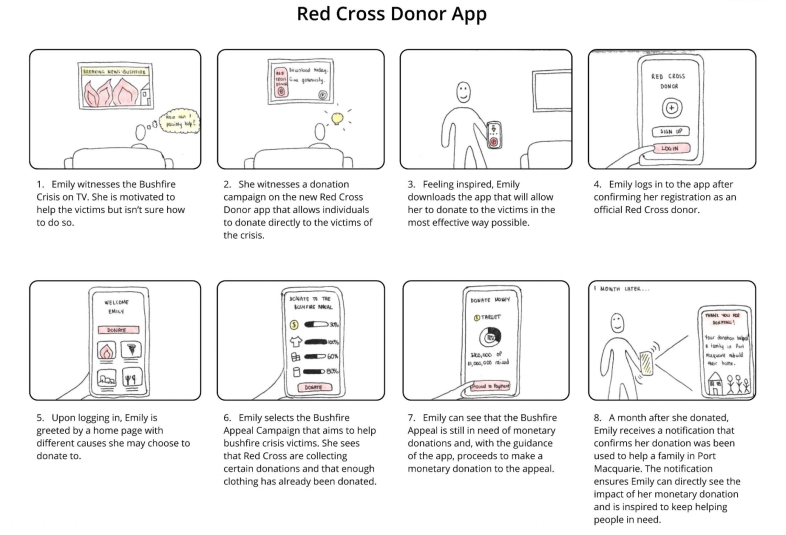

Charitable Giving
Reducing hardships faced by emergency response teams
Context
The 2019-20 bushfire season resulted in mass destruction of the land. The crisis was met with overwhelming support from the community. With limited human resources to sort and distribute the donations, many had to be discarded.
My Role
Status COMPLETE
Purposeful Charitable Giving, a case study undertaken as part of a university group project, has now been finalised.
Unpacking the Brief
The objective of the Purposeful Charitable Giving project was to better facilitate the act of charitable giving to organisations such as the Australian Red Cross. The intent was to empower citizens to make a productive impact in times of need by donating goods that don’t become a burden to emergency response teams.
Conducting Research
Background research was first conducted to identify the key issues faced by charities in managing donations and how donors could help charities reduce burdens. The findings from the research were then applied to a context-mapping session to understand donor experiences with charitable organisations.
Before the session, participants were required to complete a sensitising booklet to reflect on their pain points with charities and discover what they would like to achieve through acts of giving. The context-mapping session that was conducted played a significant role in identifying the pain points experienced by charities and donors alike. The findings were then validated through a questionnaire.

Defining the Vision
Based on the findings from the preliminary research, a vision statement was developed to identify the projected outcomes of the project:
Our aim is to reduce the time and money Australian Red Cross response teams spend on managing unsolicited physical donations in order to increase the operational efficiency of the charity. Through the implementation of multi-channel marketing efforts targeted at various donor segments, we aim to minimise the burden of overwhelming donations from the Australian community.
The targeted marketing campaigns will encourage community citizens to make constructive donations to the charity while supporting their operational response teams. This will ensure the response teams are able to quickly assort and distribute donations to those in need while maintaining an unwavering focus on the communities they are trying to help. As a result, the response teams will be able to solely dedicate their human resources and funding to helping those in need during times of crisis.
Storyboarding
My team then developed storyboards to illustrate the issues faced by both charities and donors and devise potential solutions to the problem, building on research conducted prior.
A key component of the proposed concepts was the use of a mobile-based application to help donors make productive donations. The storyboards, which featured the use of a mobile app, were then refined into a final concept. The final concept entailed the use of an app and a donation truck to guide users to drop off physical goods that are needed in order to reduce burdens associated with managing donations.
Mapping the New Journey
A user journey map was subsequently created to define the primary users for which the design solution would be created for and illustrate the proposed solution to the problem.

Prototyping and Testing
Following this, our team designed a new user experience that would help charities reduce burdens in managing an influx of donations. The solution, which was created as a mid-fidelity prototype, empowered individuals to help charities manage their donations by preventing unsolicited goods from being donated.
The solution consists of a multi-channel marketing effort defined by two components: a donation truck and a Red Cross Donor app. Users would be able to locate requested donations through the app and then be guided to a drop-off point, which consisted of the donation trucks. Donations would then be collected by volunteers, who would sort the donations by categories and turn away unwanted goods. This was designed to reduce the burden faced by emergency response teams by providing charities with donations only as they are needed, thus allowing for an improved management and distribution of physical donations.
In order to test the solution, a video prototype was created with external research participants, who were encouraged to demonstrate how they would use the newly designed product. The video prototype showcased that users were satisfied with the product and would easily be able to use the service in a real-world scenario.